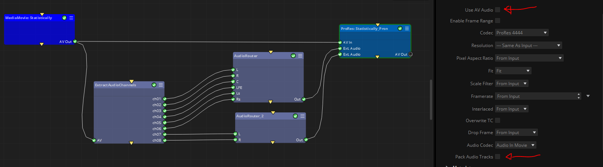

|
<< Click to Display Table of Contents >> Audio Router |
To select and recombine audio channels of the input media, mainly to prepare audio tracks for transcoder nodes downstream .
Note: This node does not "render" any output audio files by itself. What it does is to redefine the audio channels routing and pass it to posterior nodes (typically to transcoder nodes), which are the ones that can render actual media files.
This node can be used in combination with the Extract Audio Channels node for channel recombination from other audio files.
Most media formats can have audio "channels" and "audio tracks", which are different things. In this context an "audio channel" is a single audio stream, while an "audio track" is a collection of audio channels. For example a stereo track has 2 audio channels, a mono track has one audio channel, and a 5.1 track has 6 audio channels. Finally most media formats (mp4, ProRes...) can have multiple audio tracks, each one with multple audio channels, and you can use multiple Audio Router nodes to achieve any combination you want.
Example: A particular client received a movie file with 8 audio channels and now he wants to create a ProRes file with two independent audio tracks, one of them with 6 channels (a 5.1 preset) and another track with 2 channels (a stereo preset).
To do so, he would need to use an ExtractAudioChannels node, two AudioRouter nodes, and a ProRes node with two Ext Audio inputs, as seen in the image:.

Also, in the ProRes node he would need to deactivate Use AV Audio to select the Ext-Audio connectors, and also deactivate Pack Audio Tracks to avoid the ProRes node mixing all channels into a single track (as the client in this example requested two independent audio tracks)
A variable number of audio input connectors, with their metadata names and output order depending on the audio standard selected in the Preset property.
Note that some audio standards have the same number of channels but in different order, so it can be important to select the proper preset best representing the audio tracks that you want to produce (see below for more details)
Out: An audio track with recombined audio channels according to the selected audio standard. Typically to be connected to the Ext-Audio connector of transcoder nodes. This node can only output one audio track (with multiple audio channels),. When multiple audio tracks are needed you will need to use multiple Audio Router nodes, and then connect their outputs a transcoder node via multiple Ext-Audio connectors).
Preset: Select a supported audio standard, or chose Custom to specify the number of output channels. The supported presets (and their output channels) are:
Custom:
Number of channels: Given a definable number of channels (n), It will provide n output channels named as ch1... chn
Below are some preset examples that come with the node, but more presets are being added constantly. Please check the node presets even if you don´t find your desired preset here.
Mono: C
Stereo: L, R
LCR: L, C, R
Quadrophonic: L, R, Lr, Rr
Dolby Surround: L, C, R, S
5.1 SMPTE: L, R, C, LFE, Ls, Rs
5.1 DTS: L, R, Ls, Rs, C, LFE
5.1 Film: L, C, R, Ls, Rs, LFE
6.1 Dolby Surround EX: L, C, R, Ls, Cc, Rs, LFE
7.1. SMPTE: L, R, C, LFE, Ls, Rs, Lr, Rr
7.1 DTS: L, R, Ls, Rs, Lr, Rr, C, LFE
7.1 Film: L, C, R, Ls, Rs, Lr, Rr, LFE
7.1 SDDS: L, Lc, C, Rc, R, Lr, Rs, LFE
7.1.2 SMPTE: L, R, C, LFE, Ls, Rs, Lr, Rr, Ltm, Rtm
7.1.2 DTS: L, R, Ls, Rs, Lr, Rr, C, LFE, Ltm, Rtm
•7.1.2 Film: L, C, R, Ls, Rs, Lr, Rr, LFE, Ltm, Rtm
22.2 Surround: FL, FR, FC, LF1, BL, BR, FLc, FRc, BC, LFE2, SiL, SiR, TpFL, TpFC, TpC, TpBL,TpBR, TpSiL, TpSiR, TpBC, BtFC, BtFL, BtFR